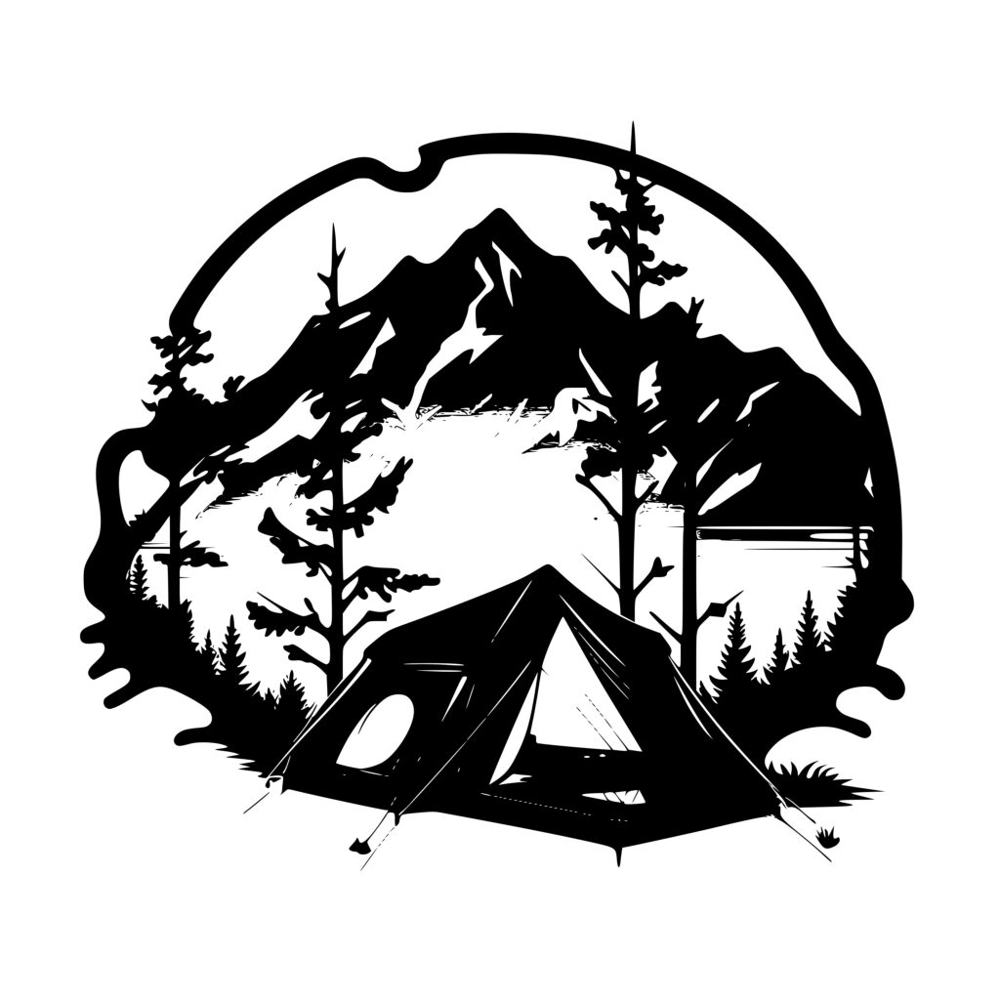

Our Projects

Stewardship Trek
An ongoing volunteer effort to hike high-traffic areas of the National Forest, collect litter, and report trail damage or missing signage. Each trek helps keep the forest clean, safe, and accessible for everyone.

Youth Wilderness Camps
A series of day and weekend camps that immerse youth in nature through hands-on lessons in forest safety, survival skills, and conservation — blending adventure, learning, and respect for the wild.